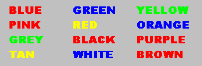

The famous "Stroop Effect" is named after J. Ridley Stroop who discovered this strange phenomenon in the 1930s. Here is your job: name the colors of the following words. Do NOT read the words...rather, say the color of the words. For example, if the word "BLUE" is printed in a red color, you should say "RED". Say the colors as fast as you can. It is not as easy as you might think!

Try this Interactive Stroop Effect Experiment. The computer will keep track of the time it takes you to say the colors of the words.